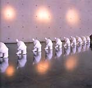

| Shao
Ting-Ju
Taiwanese ceramist.

SHAO
Ting-Ju is a Taiwanese ceramist and book illustrator. She
has won several awards and grants, including honorable mentions
at the International Competition for Contemporary Ceramic Art in
Faenza, Italy in 1994 and 2001, a first prize at the Republic of
China Ceramics Biennial in Taiwan in 1996 and a McKnight Foundation
Artist Fellowship residency at the Northern Clay Center in Minneapolis,
Minnesota, USA in 2004.
Her narrative
mixed-media installations, incorporating comical, hand-built
multiples of the human figure and birds, critically address social
and environmental issues and the human condition. Since 2002 the
human figures have also been slip-cast, the process referencing
industrial techniques. S. is also involved in book
and journal illustration.
Shao Ting-Ju's works 1991-2004 have been published in monograph
form by the Taipei County Yingge Ceramics Museum, ISBN 957017992-9.
Please visit her homepage http://homepage.mac.com/shao36/
to see more of her works.

Artist's Statement
"Being
a participant in this universe, I have been asking these questions
ever since my younger days; Why was I born? Why am I here? For the
very reason that I am strongly interested in our species, my work
in ceramics has always used the sculpting of human figures to reflect
the artists concepts.
I recorded a single shape to explore the suffering and imprisonment
of souls and bodies, as well as the desire to free the minds. Using
different combinations of clay figures, I demonstrate the tension,
hostility and dependence of people with their society, as with the
harmonious or destructive relationship between man and nature. Enlarging
the limbs of the human figures is to project a freeze frame record
of the environment and myself. It is a continuous recording of my
realization of my position in this universe, what I touched and
what I saw. Recently, I became very interested in the destination
of souls and have tried to explore this.
According to the bible, God created the image of man from earth.
Every individual is thus unique and precious. My ceramic works are
all handmade, whether they be an individual figure, or hundreds
of birds, or indeed anything else. Each piece retains its own uniqueness
while they may share an overall similarity. I have chosen wood fired
kilns whenever possible wherever I travel. During firing, my work
was placed in the Noborigama or Anagram at random, with some pleasant
surprises in the result. This reflects the fact that we cannot choose
our sex, race or nationality in advance when we are born. Each element
is unique, this constitutes the universe and the nature of our existence.
In
recent years, people have abused the resources in this world. A
lot of damages have been done to nature, and that resulted in a
lot of disasters of magnitude. This is a warning signaled by Mother
Nature to us. For this very reason, the exhibition in Kyoto, Japan,
2002, was meant to be a reflection of the respective relationship
between nature and us, with birds representing Mother Nature. For
a bird that is manifested to 100 centimeters, and a human figure
shrink to 10 centimeters, their relative ratio is a reminder for
us who are the guests passing this world. The work was titled "
The Seventy-Seven Gentle Warnings', and its theme was represented
by seventy-seven birds positioned in a circle around the small human
figure in the middle. The number seventy-seven is taken from the
bible, in which Jesus once told Peter to forgive seventy-seven times.
Effectively, it is telling us to be generous in our forgiveness,
which is what Mother Nature has been to us as well.
'Meeting the beautiful green light of the universe "is another
work, represented by a human figure of 68 centimeters. He was looking
at the small Angel positioned in the middle of his palm with a mutual
understanding. Only when people can understand this intricacy of
wonders created by God, and through his own humbling, then we can
achieve a balance in the geo-cycle with Mother Cycle.
For the past 18 years, the clay figures always took on a small
head with a fat body. The toes protruding from underneath. This
is a reflection of the greed in this polluted world, people have
lost their innocence, and all the efforts were used to think of
obtaining small advantages. The size of the head became relatively
small in this disproportion of energy. Yet, the toes are a remainder
of the true nature of ourselves, one that cannot be hidden and should
be drawn back into focus.
The
use of multimedia is also a reflection of the contrast between material
substance and the concept of time, just as the physical existence
and the time of existence of all life on earth. The final disappearance
of the physical body mirrors the fact that one day, the ceramic
bird or figure can also be broken. The use of iron and wooden frame
denotes the eternity of time. The use of feathers, which could represent
the feather on the back of the angels, or the little wings on the
angles; in turn draws on the symbolic representation of our faith
in trust, hope and aspiration. While there are something in this
universe which does not take on a physical form, our faith will
remain the striving force that seek to maintain a balance with the
universe.
The title of the work also constitutes an important poetic element;
it is in itself like a narrative poem, revealing the in-depth meaning
of the ceramic art."
More Artists of the Week
More Articles
|
{kind=link}
{kind=link}
{kind=link}
{kind=link}
{kind=link}
{kind=link}